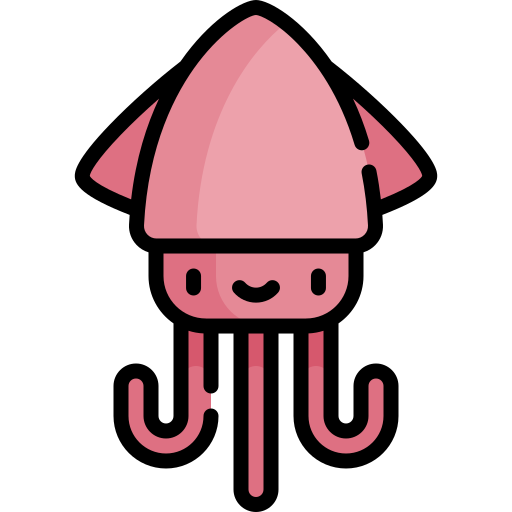

 Que es Splatoon
¿Qué es Splatoon?
04/05/2022

Qué es?
Splatoon es un videojuego de tipo shooter para consolas de nintendo, que a pesar de tratarse de disparos en primera persona en un mapa para intentar acabar con con tus enemigos, tiene una dinamica muy distinta a como se maneja este tipo de videojuegos.
En teoría, el juego se trata sobre guerras de gotcha, tambien llamado paintball o guerra de pintura, en las cuales el combate se divide en 2 equipos, uno de cada color. El color de la pintura que dispara cada equipo, le hace daño al equipo contrario y al revez y el propocito general de el juego es pintar el campo de batalla mas que el rival.
Por otra parte, eres una especie de ser con superpoderes que puede transportarse mucho mas rapido cuando caminamdo sobre zonas ya pintadas por el color de tu equipo, ademas podras convertirtre en un calamar entintado y nadar por dentro de las zonas ya pintadas por tu color, se daña si caminas por zonas píntadas por el color de tu rival.
Forma de Ganar
Splatoon tiene muchos modos de juego, pero el principal como ya lo mencione se trata de pintar con el color de tu pintura mas terreno que el rival, evidentemente, al tratar de completar esta tarea, te encontraras con gente de el otro equipo y tendras que matarlos Eexisten otros modos de juego tales como pintazonas, en el que tendras que defender una zona en especifico del rival, torreon, en el que tendras que proteger una torre de control en movimiento hasta que esta llegue a su punto base Pezdorado, en el que intentaras llevar el arma suprema llamada pezdorado a la base rival, y or ultimo, asalto almeja, en el que intenbtaras encestar tantos balones como puedas en la orteria del rival
 Top Armas
Top Armas